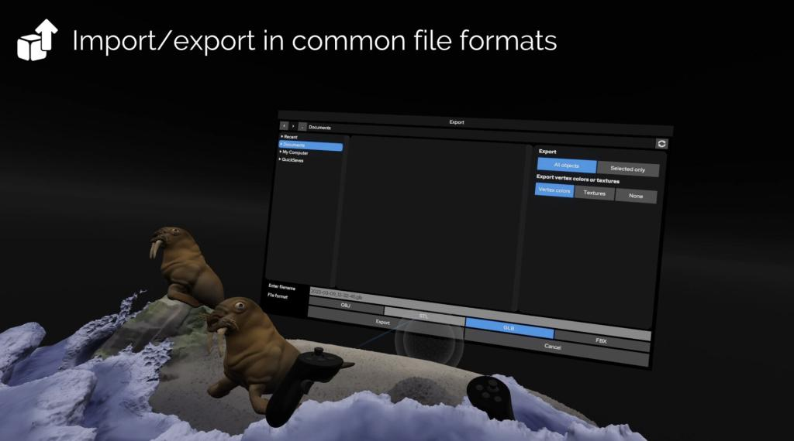
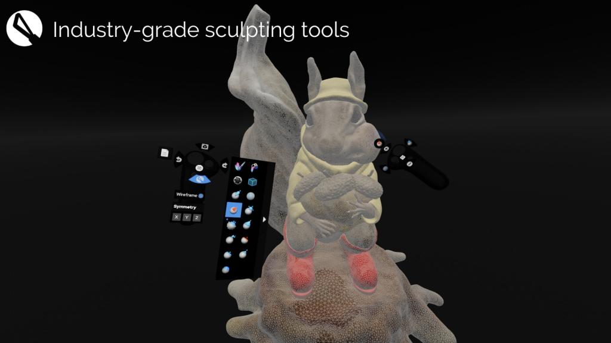
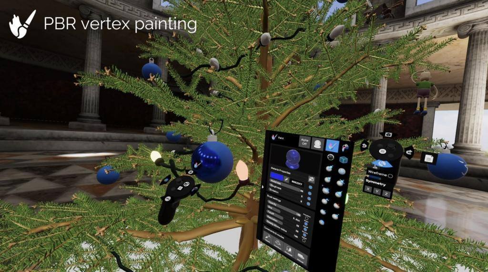
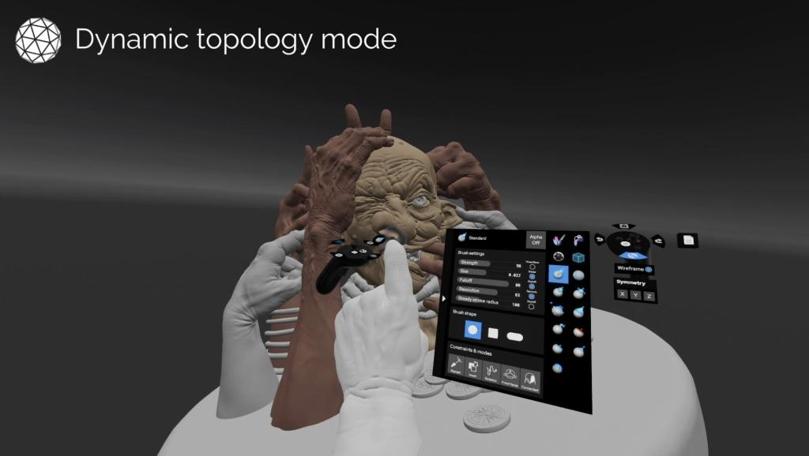
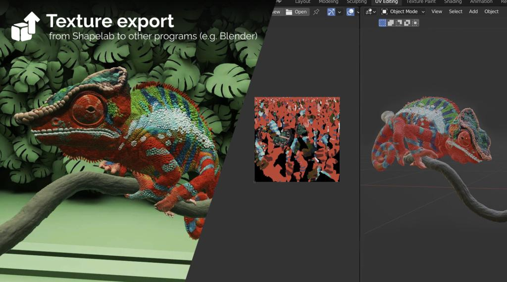
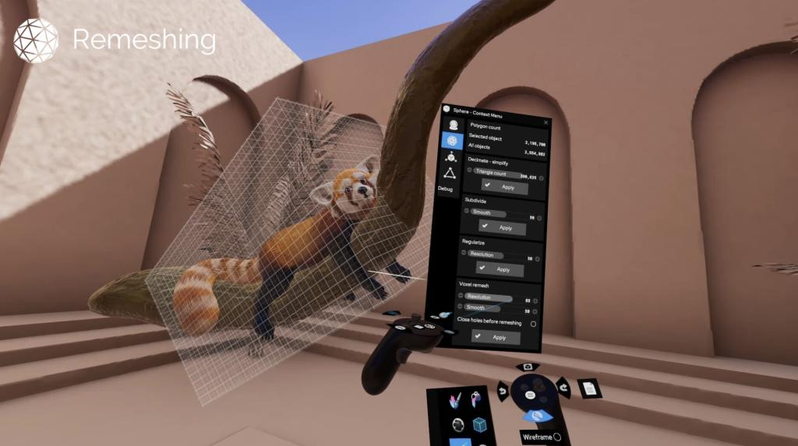
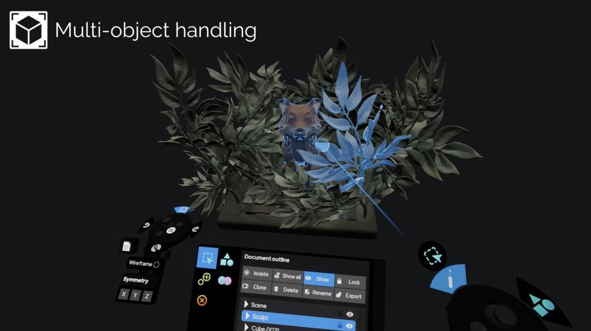
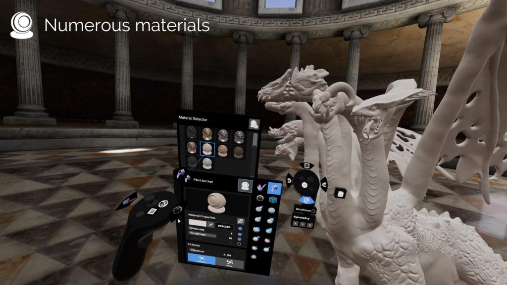

公开课
空间建模雕刻软件Shapelab vr版分享








本分享版本是较早版本，基本功能相同，最新更新版本内容如下，大家对比后觉得有必要，可以去官方或者steam购买。
2024重大更新：
VR和桌面模式：引入了一个在桌面和VR模式之间切换的实验功能，以提高使用经典鼠标和键盘设置更快的任务的效率。
多分辨率、细分级别：Shapelab因其平滑的动态拓扑模式而受到称赞，但那些不喜欢这种方法的人可以高兴，因为现在你也可以细分网格以创建多个“分辨率级别”
四重网格化（AutoRetopologize）：使用四重网格功能实现较低分辨率、更清晰的基于四重网格的网格，并增强与动画和手动重新布局等进一步设计步骤的兼容性。
细节传递（投影）：将细节特征从拓扑结构不太有序的高分辨率模型（包括三角形）传递到另一个可能基于四边形的对象
多选，养育：您现在可以一次选择多个对象并对其应用修改，以及按层次组织它们
新的matcaps，自定义matcaps：我们为matcaps添加了许多新选项，但如果您不想从可用选项中进行选择，现在可以导入自己的选项！
平面着色：用于在雕刻过程中检查拓扑和几何图形
用户体验改进：引入快速访问径向菜单，完全隐藏画笔调色板的能力，等等！
…还有更多！查看完整的更新说明，了解更多信息：更新说明
我们希望您能像我们一样喜欢Shapelab 2024，我们期待阅读您对新功能的反馈！欢迎通过我们常用的沟通渠道与我们联系，并加入我们的Discord服务器，与Shapelab的其他用户见面。
请注意，之前购买过Shapelab的所有人都可以自动访问Shapelab 2024更新，此版本的Shapelab将在年底前获得更多更新。之前购买Shapelab的用户将在应用程序的未来版本上获得折扣。你可以在我们之前在Steam上的帖子中阅读更多关于这一决定的信息。
链接：https://pan.baidu.com/s/1lBoGCztWAEL4fk8CAykW1Q
提取码：w0k4
以上内容仅供个人使用（非商用）
ONLY for PERSONAL (NON-COMMERCIAL) use.
加群获得更多免费模型！